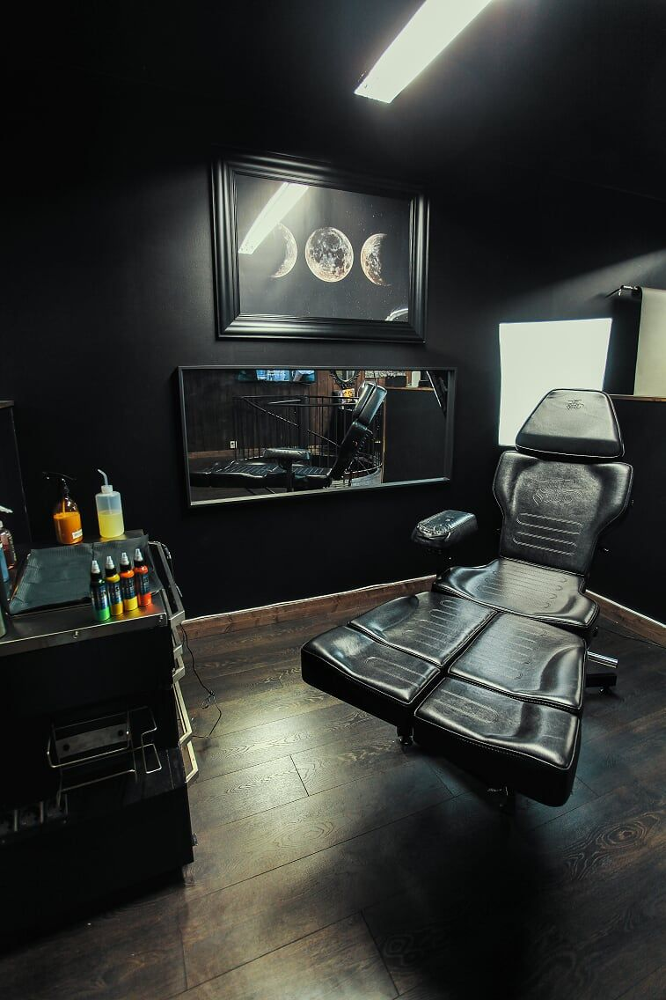

Tatto Studio Art
Tatuate con nosotros, los mejores estilos y diseños para tu cuerpo
¡Cotizalo Ahora!


Realismo: Se esfuerza por replicar la apariencia exacta de una fotografía o imagen en la piel. Los tatuajes realistas a menudo tienen detalles y sombreado extremadamente precisos.
Neotradicional: Una evolución del estilo tradicional, pero con colores más vibrantes y líneas más delgadas. Combina elementos clásicos con técnicas y diseño más contemporáneos.
Tradicional (Old School): Caracterizado por líneas gruesas y negras, colores sólidos y motivos clásicos como anclas, rosas, corazones y calaveras. Es un estilo atemporal y clásico.
Tribal: Inspirado en patrones culturales tribales de diversas partes del mundo. Usa líneas geométricas y formas abstractas para crear diseños intrincados.
Ilustrativo: Similar al realismo, pero con una mayor libertad creativa. Puede incluir elementos fantásticos, surrealistas o incluso caricaturescos.
Realismo: Se esfuerza por replicar la apariencia exacta de una fotografía o imagen en la piel. Los tatuajes realistas a menudo tienen detalles y sombreado extremadamente precisos.
Neotradicional: Una evolución del estilo tradicional, pero con colores más vibrantes y líneas más delgadas. Combina elementos clásicos con técnicas y diseño más contemporáneos.
Tradicional (Old School): Caracterizado por líneas gruesas y negras, colores sólidos y motivos clásicos como anclas, rosas, corazones y calaveras. Es un estilo atemporal y clásico.
Tribal: Inspirado en patrones culturales tribales de diversas partes del mundo. Usa líneas geométricas y formas abstractas para crear diseños intrincados.
Ilustrativo: Similar al realismo, pero con una mayor libertad creativa. Puede incluir elementos fantásticos, surrealistas o incluso caricaturescos.